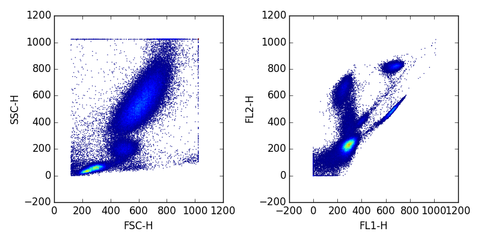
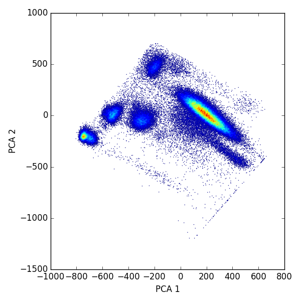

With the growing number of markers that can be used in flow cytometry panels, data analysis often runs into difficulties due to the high dimensional nature of the data. Currently fluorescent based flow techniques can measure over 20 markers, while CyTOF can measure over 40. Because of this dimensional reduction techniques have become an interesting area of investigation in computational flow cytometry. In this article I’ll describe how to use PCA in the python fcm library.
For an example we’ll take a simple four dimensional (2 scatters and 2 flourescent markers) sample and reduce it to two dimensions. So lets take a look at our data before transformation
import fcm
import matplotlib.pyplot as plt
from fcm.graphics import bilinear_interpolate as blt
x = fcm.loadFCS('3FITC_4PE_004.fcs')
for i,j in enumerate([(0,1),(2,3)]):
# c is the density estimated color
c = blt(x[:,j[0]], x[:,j[1]])
ax = plt.subplot(1,2,i+1)
ax.scatter(x[:,j[0]], x[:,j[1]], s=1, c=c, edgecolor='none')
ax.set_xlabel(x.channels[j[0]])
ax.set_ylabel(x.channels[j[1]])
plt.tight_layout()
plt.show()
which looks like:
scikits learn provide a convenient way to do PCA projections, so that’s what we’ll use.
pcaer = PCA(n_components=2)
pcaer.fit(x)
print(pcaer.explained_variance_ratio_) # should be approx .7 and .2
#project data
proj_x = pcaer.transform(x)
ax = plt.subplot(1,1,1)
c = blt(proj_x[:,0], proj_x[:,1])
ax.scatter(proj_x[:,0], proj_x[:,1], s=1, c=c, edgecolor='none')
ax.set_xlabel('PCA 1')
ax.set_ylabel('PCA 2')
which gives the follow picture
Now lets add this projected data to the data object.
from fcm.core.tree import TransformNode
# create a new node for the tree in the fcmdata object
node = TransformNode('PCA', x.get_cur_node(), proj_x)
node.channels = [('PCA 1', 'PCA 1'), ('PCA 2', 'PCA 2')]
#add it to the tree
x.tree.add_child(node.name,node)
Now it’s part of the data tree.
For fun, lets see how the projected data events correspond with the original unprojected data. We’ll fit a mixture of Gaussian distributions to the projected data, and see how the classified events look in the unprojected space. Lets start with fitting the mixture model and looking at that.
import fcm.statistics as stats
#make sure we're looking at the pca data
x.visit('PCA')
m = stats.DPMixtureModel(10, 100, 1000)
m.ident = True # turn in label switch
r = m.fit(x, 100) # generate a mixture model
r = r.average() # average over mcmc draws
# associate events
k = r.classify(x)
fig = plt.figure(figsize=(6,6))
ax = plt.subplot(1,1,1)
ax.scatter(x[:,0], x[:,1], s=1, c=k, edgecolor='none')
mus = r.mus
ax.scatter(mus[:,0], mus[:,1], s=10, c='red')
ax.set_xlabel(x.channels[0])
ax.set_ylabel(x.channels[1])
Now lets look at the data in the original space
x.visit('root')
fig = plt.figure(figsize=(8, 4))
# plot each pairwise set of channels
for i, j in enumerate([(0, 1), (2, 3)]):
ax = plt.subplot(1, 2, i + 1)
ax.scatter(x[:, j[0]], x[:, j[1]], s=1, c=k, edgecolor='none')
ax.set_xlabel(x.channels[j[0]])
ax.set_ylabel(x.channels[j[1]])